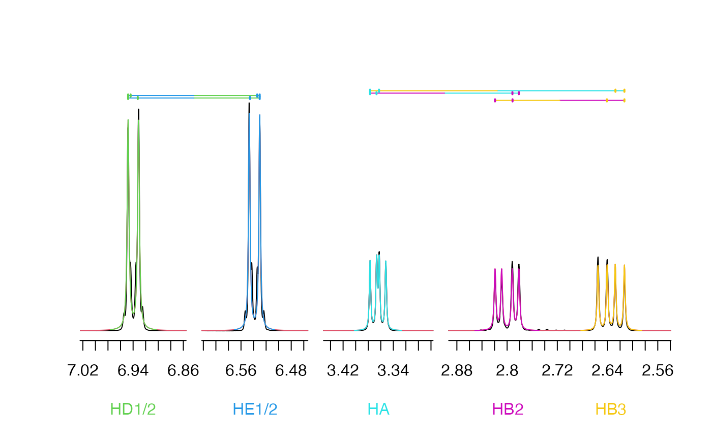

Plot spectrum from 1D fit
Usage
plot_sparse_1d(
fit_data,
tables = NULL,
spec_idx = 1,
col_model = 2,
col_resonance = NULL,
lwd = 1,
tick_spacing = 0.02,
coupling_spacing = 0.01,
coupling_marks = 0.009,
xaxs = "i",
yaxt = "n",
bty = "n",
always_show_start = FALSE,
add = FALSE,
ppm_map = make_map(get_spec_int(fit_data, "input", spec_idx)[[1]])
)Arguments
- fit_data
fit_input or fit_output structure
- tables
list with resonances, nuclei, and couplings tables
- spec_idx
index of spectrum to plot
- col_model
color for modeled peak shapes
- col_resonance
colors for resonances
- lwd
line width
- tick_spacing
spacing between axis ticks (ppm)
- coupling_spacing
spacing between coupling annotations (fraction of plot)
- coupling_marks
size of coupling tick marks (fraction of plot)
- xaxs
x-axis style passed to
plot- yaxt
y-axis style passed to
plot- bty
box type passed to
plot- always_show_start
logical indicating whether to show starting model when fit is present
- add
logical indicating whether to add to existing plot
- ppm_map
sparse axis map created by
make_map
Examples
spec_file <- system.file("extdata", "tyrosine", "proton.ft1", package = "fitnmr")
spec <- read_nmrpipe(spec_file)
start_resonances <- structure(
list(
x = c("HA", "HB3", "HB2", "HD1/2", "HE1/2"),
x_sc = c(
"HA-HB3 HA-HB2",
"HA-HB3 HB3-HB2",
"HA-HB2 HB3-HB2",
"HD1/2-HE1/2-3 HD1/2-HE1/2-5",
"HD1/2-HE1/2-3 HD1/2-HE1/2-5"
)
),
row.names = c("HA", "HB3", "HB2", "HD1/2", "HE1/2"),
class = "data.frame"
)
start_nuclei <- structure(
list(
omega0_ppm = c(3.364, 2.635, 2.799, 6.94, 6.538),
r2_hz = c(0.7, 0.7, 0.7, 0.7, 0.7)
),
class = "data.frame",
row.names = c("HA", "HB3", "HB2", "HD1/2", "HE1/2")
)
start_couplings <- structure(
list(hz = c(7.153, 5.159, -13.941, 7.7, 2)),
class = "data.frame",
row.names = c("HA-HB3", "HA-HB2", "HB3-HB2", "HD1/2-HE1/2-3", "HD1/2-HE1/2-5")
)
start_tables <- list(
resonances = start_resonances,
nuclei = start_nuclei,
couplings = start_couplings
)
param_list <- tables_to_param_list(list(spec), start_tables)
param_list$start_list$m0[] <- 1e9
arg_list <- param_list_to_arg_list(param_list)
fit_input <- do.call(make_fit_input, c(list(list(spec), omega0_plus = 0.075), arg_list))
fit_output <- perform_fit(fit_input)
plot_sparse_1d(fit_output, start_tables)
